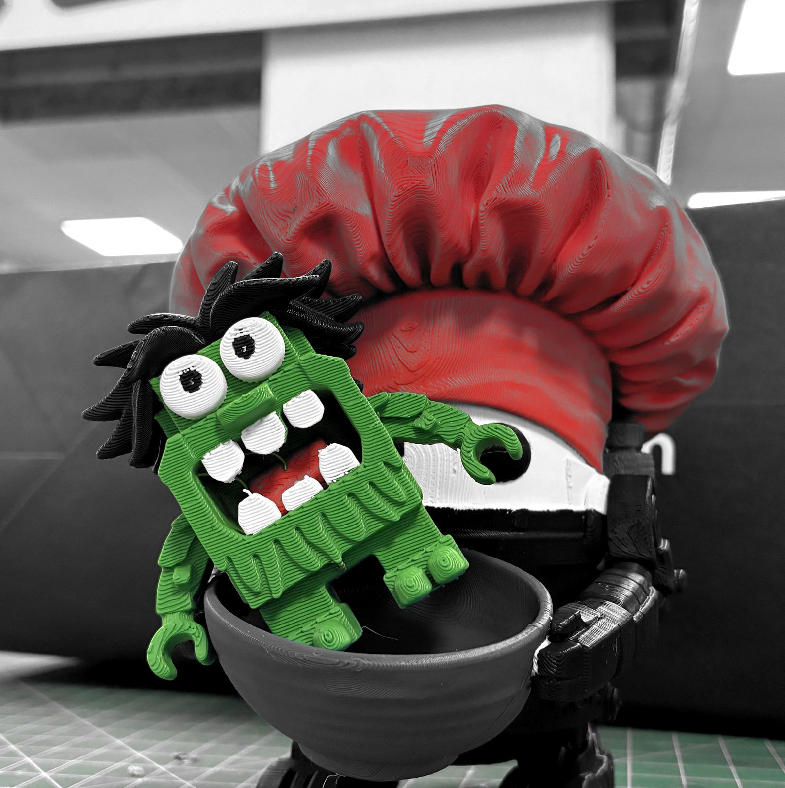
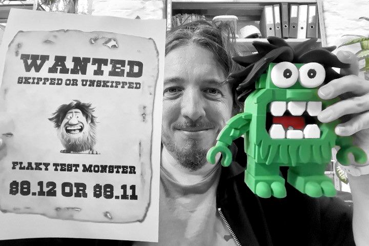
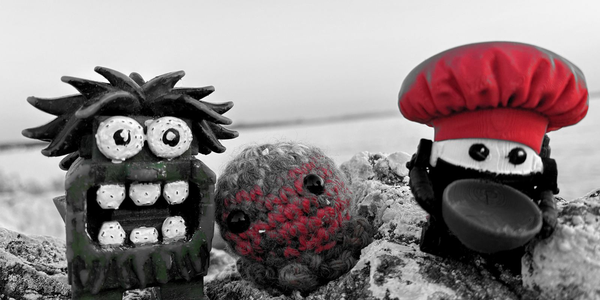
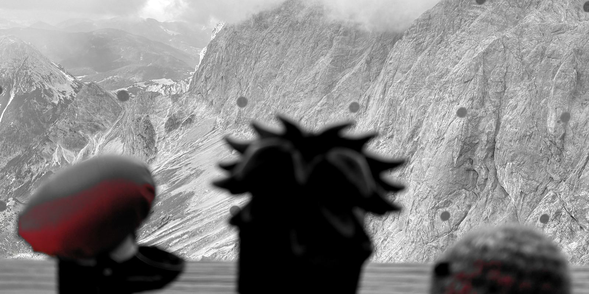
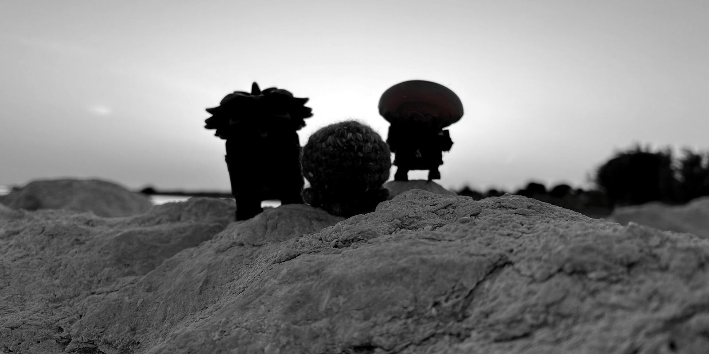
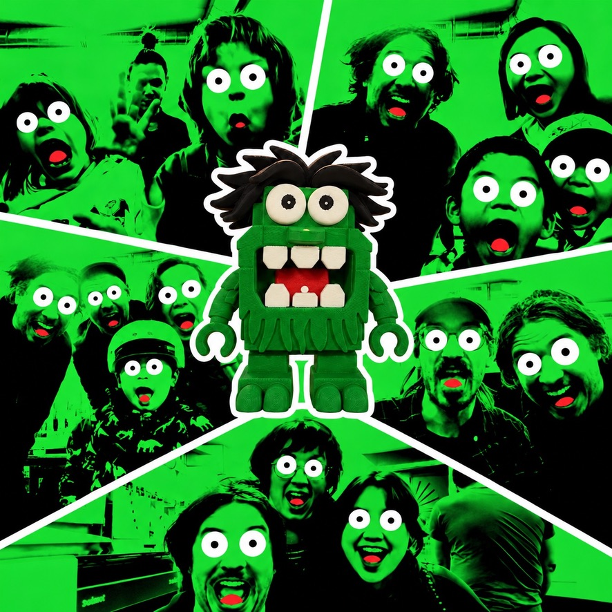

Where the monster comes from
Born as a joke in a chat, 3D printed, traveling the world.

TL;DR
Born around Kibana 8.11 as a joke in the chat of the Discover team at Elastic’s Kibana: somebody had to be making all those flaky tests, so the culprit got a face. Holidays, a LinkedIn job hunt and giveaways all failed to get rid of it. Later it was 3D printed, and in October 2026 it became an exhibit at the Happylab makerspace’s 20th anniversary in Vienna.
What is a flaky test?
Every code change is checked by automated tests on a CI (continuous integration) system. A test is flaky when it sometimes fails although nothing changed: timing, leftovers from other tests, a slow network, a busy machine. Rerun it and it passes. At scale, flaky tests are daily life: failures to chase, tests to skip, releases held up by a red build that turns green on retry. Is the pipeline haunted… or is a little goblin handcrafting flaky tests with love?
Passed locally, failed on CI.
Timeline
-
27 October 2023 · Kibana 8.11 / 8.12
A suspect in the chat
A teammate notices that while kertal was on holiday, fewer flaky tests came in. Suspicious: is kertal the flaky test monster? AI guessed what a flaky test monster looks like. There were similarities in the picture it returned, no question, but when the monster was turned into a 3D print two years later, it was clear: the monster was its own entity.

-
20 July 2025 · Kibana issue #228706
A flaky postcard from Italy and Austria
The monster opened a Kibana issue of its own, labeled
test-failure-flaky: on holiday with kertal in Italy and the Austrian Alps, it passed out on the way to the post office and woke up with an arm missing.Have flaky test fixers become violent? HELP!
The team offered it toresume vacationing indefinitely
. Confession: the arm broke off during a photo shoot for its Instagram career. The monster was promised a sturdier body with a steel skeleton. Its answer:I’ll be back (with 2 hands)!
-
The tour continues
Sent on holiday
Again Italy, Croatia, the Austrian Alps, Spain or Las Vegas, together with the monster fighters Minichef and Knitty McGritty. That didn’t solve the flaky test problem.



-
To sum it up
Measures to resolve the flakiness
Several measures were applied to get rid of the monster. All of them were flaky.
- Relocation. Convince the monster to stay in Italy, Croatia, Austria, Spain or Las Vegas. It came back.
- A new career. Open a LinkedIn account for it, with the
Open to work
badge. The account was blocked. No sense of humor on LinkedIn. - Spreading the load. Give away cute Flaky Test Monster prints and buttons to other teams and companies. No reduction in flakiness observed.
- Social media. A flaky influencer, seems the demand was limited.
-
October 2026
Monster at Happylab
On 9 October the goblin from the CI pipeline entered the physical world again as one of the makers’ exhibits at the 20th anniversary of the Happylab makerspace in Vienna. The monster refused to stay there, and the flakiness continued unabated.

-
What’s next?
A musical career
Let’s convince the monster to pursue a musical career: help it find a country for the Eurovision Slong Contest.